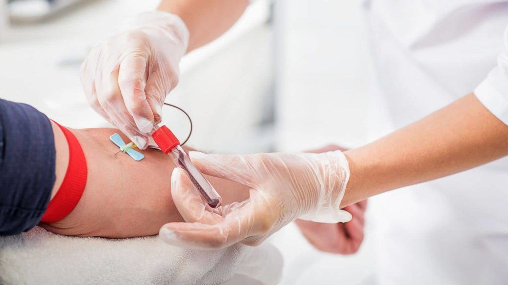

Cuidamos de ti y de tu salud en todo momento.
Bienvenidos a nuestra clínica médica.
Cuidamos de ti y de tu salud en todo momento.
Bienvenidos a nuestra clínica médica.
La UCI es un área crítica del hospital para pacientes que necesitan atención médica intensiva debido a enfermedades graves o lesiones traumáticas.
La Cardiología es el área de la medicina que se enfoca en el diagnóstico y tratamiento de enfermedades del corazón y del sistema circulatorio.

La Pediatría es el área de la medicina que se enfoca en la atención médica de niños y adolescentes.
La Ginecología es el área de la medicina que se enfoca en la atención médica de la salud femenina, especialmente del sistema reproductivo.
El Radiodiagnóstico es el área de la medicina que se enfoca en el uso de técnicas de diagnóstico por imagen para detectar enfermedades y lesiones en el cuerpo humano.
La Odontología es el área de la medicina que se enfoca en la salud dental y bucal.

La Cirugía es el área de la medicina que se enfoca en la realización de procedimientos quirúrgicos para tratar enfermedades y lesiones en el cuerpo humano.

La atención de Urgencias es un área crítica en la medicina que se enfoca en la atención médica inmediata y urgente para pacientes con enfermedades o lesiones que requieren atención médica inmediata.
Estudios de la sangre
|
Los análisis de sangre son una herramienta vital para evaluar la salud de una persona. A través de ellos, se pueden detectar diversas afecciones y enfermedades, lo que permite a los profesionales de la salud tomar decisiones informadas sobre el tratamiento adecuado. |
Donacion de sangre |
La donación de sangre es un acto solidario y generoso que puede salvar vidas. En nuestra clínica, estamos comprometidos con la promoción y fomento de la donación de sangre para ayudar a aquellos que necesitan transfusiones de sangre para sobrevivir. |
Servicio |
Horario |
Ubicacion |
|---|---|---|
| Cuidados intensivos | Abierto las 24 horas | Ala Oeste, segundo piso |
| Cardiologia | Lunes a viernes de 8:00 am a 6:00 pm, sábados de 8:00 am a 12:00 pm | Ala Este, primer piso |
| Pediatria | Lunes a viernes de 9:00 am a 7:00 pm, sábados de 9:00 am a 1:00 pm | Ala Oeste, primer piso |
| Ginecologia | Lunes a viernes de 8:00 am a 6:00 pm, sábados de 8:00 am a 12:00 pm | Ala Este, segundo piso |
| Radiodiagnostico | Lunes a viernes de 8:00 am a 6:00 pm, sábados de 8:00 am a 12:00 pm. | Ala Oeste, primer piso |
| Odontolgia | Lunes a viernes de 9:00 am a 7:00 pm, sábados de 9:00 am a 1:00 pm | Ala Este, segundo piso |
| Cirugia | Lunes a viernes de 8:00 am a 6:00 pm | Ala Oeste, tercer piso |
| Urgencias | Abierto las 24 horas | Ala Este, primer piso |
| Laboratorio | Lunes a viernes de 7:00 am a 4:00 pm, sábados de 7:00 am a 12:00 pm. | Ala Oeste, segundo piso |